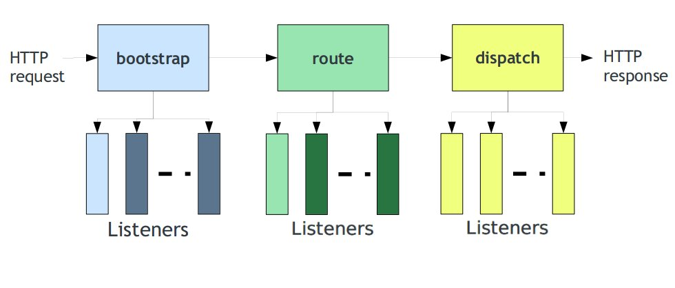

ZF2- Research Document
@Author: Thuy Dinh Xuan
As I said before, this is a library so you can easy using it at every where in your project. You can get some component in ZF2 for your project....
"repositories": [
{
"type": "composer",
"url": "https://packages.zendframework.com/"
}
],
"require": {
"zendframework/zend-config": "2.0.*",
"zendframework/zend-http": "2.0.*"
},
php composer.phar install
We have 2 ways to create new a ZF2 project.
In my case, I using Application Skeleton.
You can download application skeleton with git or using composer
cd my/project/dir
git clone git://github.com/zendframework/ZendSkeletonApplication.git
cd ZendSkeletonApplication
php composer.phar install
git clone git://github.com/zendframework/ZendSkeletonApplication.git --recursiveSet up a virtual host to point to the "public/" directory of the project and you should be ready to go!
Note: With 2 cases about we got zf2 library in your project at vendor/zendframework/zendframewok/library/Zend As use see, that path is so long. In another way. When using some source controller such as: SVN, Git, Hg... You must to commit all ZF2 Library to your repository. I don't think that are the good way. I using
git clone git://github.com/zendframework/ZendSkeletonApplication.gitIf you have working with ZF1. You know ZF are flexible. Developer can custom directory structure for their project. That same to ZF2. But I think someone new like me. We should to understand the standard directory structure
ProjectName/
--configs/
----autoload/
--------global.php
--------local.php
--------yourmodulename.local.php
----application.config
--modules/ // your module push here
----Application/ // that is module namespace
-------config/ // module config
-------language/
-------src/
----------Application/ // that is module namespace
-------------Controller/
-------------Model/
-------------Service/
-------view/
---------application/ // that is lowercase module namespace
------------controller-name/ // using - to separator when controller named using camel-case
----------------action-name.phtml
--public/
----index.php
----.htaccess
--vendors/ // 3rd party module push here
----zendframework/
----composer/ // composer auto create this directory
----autoload.php // composer auto create this file
Any questions here? No? So if I have big project with many files, classes, namespace.... so I must handle them hand by hand? OMG. That take more time to do that.... Don't worry, ZF provider a Tool to general classmap for you. Just focus to your code.
bin/classmap_generator.php
cd /your/project
php /path/to/classmap_generator.php -w
config/application.config.php
return array(
'modules' => array(
'Application', // list module want to active in your project
),
'module_listener_options' => array(
'config_glob_paths' => array( // autoload file config
'config/autoload/{,*.}{global,local}.php',
),
'module_paths' => array(
'./module', // list directory using to store your module
'./vendor',
),
),
);
* Main application class for invoking applications
*
* Expects the user will provide a configured ServiceManager, configured with
* the following services:
*
* - EventManager
* - ModuleManager
* - Request
* - Response
* - RouteListener
* - Router
* - DispatchListener
* - ViewManager
*
* The most common workflow is:
* <code>
* $services = new Zend\ServiceManager\ServiceManager($servicesConfig);
* $app = new Application($appConfig, $services);
* $app->bootstrap();
* $response = $app->run();
* $response->send();
* </code>
All the central idea behind them is code reusability and separation of concerns
Everything are event.

use Zend\EventManager\EventManager;
$events = new EventManager;
$events->attach('do', function($e) {
$event = $e->getName();
$params = $e->getParams();
printf(
'Handled event "%s" with parameter "%s"',
$event,
json_encode($params)
);
});
$params = array('foo' => 'bar','baz' => 'bat');
$events->trigger('do', null, $params); //event, target, parameter
//print : Handled event "do" with parameter "{"foo":"bar","baz":"bat"}"
With that example we know how to write an event and how to using that. That example are full detail of single event we called "do". When "do" event are trigged that will be callback to a function closure. We can replace the function closure with array callback, function or something can work when "do" called
We can separator the example about:use Zend\EventManager\EventManager;
$events = new EventManager;
$events->attach('do', array($this,'doCallback');
public function doCallback ($e)
{
$event = $e->getName();
$params = $e->getParams();
printf(
'Handled event "%s" with parameter "%s"',
$event,
json_encode($params)
);
}
$events = new EventManager();
$events->attach(array('these', 'are', 'event', 'names'), $callback);
$events = new EventManager();
$events->attach('*', $callback);
Likely the Event Manager but when you has more event in other module, other place.
How to attack them to your module?
Share Event Manager will help you to do that.
This is to allow attaching to events when you don’t have access to the object.
You should implements Zend\EventManager\EventManagerAwareInterface to make it run.
use Zend\EventManager\EventManager;
use Zend\EventManager\EventManagerAwareInterface;
use Zend\EventManager\EventManagerInterface;
class Foo implements EventManagerAwareInterface
{
protected $events;
public function setEventManager(EventManagerInterface $events)
{
$this->events = $events;
return $this;
}
public function getEventManager()
{
if (!$this->events) {
$this->setEventManager(new EventManager(__CLASS__));
}
return $this->events;
}
public function bar($baz, $bat = null) {
$params = compact('baz', 'bat');
$this->getEventManager()->trigger(__FUNCTION__, $this, $params);
}
}
use Zend\EventManager\SharedEventManager;
$sharedEvent = new SharedEventManager;
$sharedEvent->attach('Foo', 'bar', function($e) {
$event = $e->getName();
$target = get_class($e->getTarget());
$params = json_encode($e->getParams());
printf(
'%s called on %s, using params %s',
$event,
$target,
$params
);
});
$foo = new Foo();
$foo->getEventManager()->setSharedManager($sharedEvent);
$foo->bar('bazvalue', 'batvalue');
//print : bar called on Foo, using params {"baz":"bazvalue","bat":"batvalue"}
Cover in this section are how to get Service Manager (SM) and Type of SM
$serviceLocator = $this->getServiceLocator();namespace YourModule\Service;
use Zend\Mvc\MvcEvent;
class Module
{
public function onBootstrap(MvcEvent $e)
{
$sm = $e->getApplication()->getServiceManager();
}
}$serviceLocator = $this->getController()->getServiceLocator();//YourModule/config/module.config.php
return array(
'controllers'=>array(
'invokables' => array(
'Demo\Controller\User' => 'Demo\Controller\UserController'
),
),
)
namespace YourModule\Service;
use Zend\ServiceManager\AbstractFactoryInterface;
use Zend\ServiceManager\ServiceLocatorInterface;
class CommonModelTableAbstractFactory implements AbstractFactoryInterface
{
public function canCreateServiceWithName(ServiceLocatorInterface $locator, $name, $requestedName)
{
return (substr($requestedName, -5) === 'Table');
}
public function createServiceWithName(ServiceLocatorInterface $locator, $name, $requestedName)
{
$db = $locator->get('Zend\Db\Adapter\Adapter');
$tablemodel = new $requestedName;
$tablemodel->setDbAdapter($db);
return $tablemodel;
}
}
//YourModule/config/module.config.php
return array(
'service_manager'=> array(
'abstract_factories' => array(
'YourModule\Service\CommonModelTableAbstractFactory',
),
);
),
);//YourModule/config/module.config.php
return array(
'service_manager'=>array(
'factories' => array(
'MyTable' => function ($sm) {
$db = $sm->get('Zend\Db\Adapter\DbAdapter');
$table = new \YourModule\Model\MyTableModel();
$table->setDbAdapter($db);
},
),
),
);
namespace YourModule\Service;
use Zend\ServiceManager\FactoryInterface;
use Zend\ServiceManager\ServiceLocatorInterface;
class MyTableFactory implements FactoryInterface
{
public function createService(ServiceLocatorInterface $serviceLocator)
{
$db = $serviceLocator->get('Zend\Db\Adapter\DbAdapter');
$table = new \YourModule\Model\MyTableModel();
$table->setDbAdapter($db);
return $table;
}
}
//YourModule/config/module.config.php
return array(
'service_manager'=>array(
'factories' => array(
'MyTable' => 'YourModule\Service\MyTableFactory'
),
),
);
//YourModule/config/module.config.php
return array(
'service_manager'=>array(
'factories' => array(
'MyTable' => 'YourModule\Service\MyTableFactory'
),
'aliases' => array(
'YourModule\Model\MyTable' => 'MyTable',
),
),
);
//YourModule/config/module.config.php
return array(
'service_manager'=>array(
'factories' => array(
'MyTable' => 'YourModule\Service\MyTableFactory'
),
'shared' => array(
// Usually, you'll only indicate services that should _NOT_ be
// shared -- i.e., ones where you want a different instance
// every time.
'MyTable' => false,
),
),
);
//YourModule/config/module.config.php
return array(
'service_manager'=>array(
'services' => array(
// Keys are the service names
// Values are objects
'Auth' => new YourModule\Authentication\AuthenticationService(),
),
),
);
//YourModule/config/module.config.php
return array(
'service_manager'=>array(
'initializers' => array(
function ($instance, $sm) {
if ($instance instanceof \Zend\Db\Adapter\AdapterAwareInterface) {
$instance->setDbAdapter($sm->get('Zend\Db\Adapter\Adapter'));
}
}
),
),
);
namespace YourModule\Model;
use Zend\Db\TableGateway\AbstractTableGateway;
use Zend\Db\Adapter\AdapterAwareInterface;
use Zend\Db\Adapter\Adapter;
class UserTable extends AbstractTableGateway
implements AdapterAwareInterface
{
protected $table = 'zf2_users';
public function setDbAdapter(Adapter $adapter)
{
$this->adapter = $adapter;
$this->initialize();
}
}
//YourModule/config/module.config.php
return array(
'service_manager'=>array(
'initializers' => array(
function ($instance, $sm) {
if ($instance instanceof \Zend\Db\Adapter\AdapterAwareInterface) {
$instance->setDbAdapter($sm->get('Zend\Db\Adapter\Adapter'));
}
}
),
'invokables' => array(
'YourModule\Model\UserTable' => 'YourModule\Model\UserTable'
)
),
);
//YourModule/config/module.config.php
return array(
'service_manager'=>array(
'factories' => array(
'MyService' => 'YourModule\Service\MyServiceFactory'
),
'allow_override' => array(
'MyService' => true,
),
),
);
The basic unit in ZF2 application is a module. Module are "Plug & play" technology
Module are simple:
namespace Front;
use Zend\Mvc\ModuleRouteListener;
use Zend\Mvc\MvcEvent;
use Zend\ModuleManager\ModuleManager;
use ZG\View\Helper\Editor;
class Module
{
public function onBootstrap(MvcEvent $e)
{
$e->getApplication()->getServiceManager()->get('translator');
$eventManager = $e->getApplication()->getEventManager();
$moduleRouteListener = new ModuleRouteListener();
$moduleRouteListener->attach($eventManager);
}
public function init(ModuleManager $moduleManager)
{
$sharedEvents = $moduleManager->getEventManager()->getSharedManager();
$sharedEvents->attach(__NAMESPACE__, 'dispatch', array($this, 'getLayoutConfig'), 100);
$sharedEvents->attach(__NAMESPACE__, 'dispatch', array($this, 'addViewVariables'), 201);
}
public function getConfig()
{
return include __DIR__ . '/config/module.config.php';
}
public function getAutoloaderConfig()
{
return array(
'Zend\Loader\StandardAutoloader' => array(
'namespaces' => array(
__NAMESPACE__ => __DIR__ . '/src/' . __NAMESPACE__,
),
),
);
}
public function getViewHelperConfig()
{
return array(
'factories' => array(
// the array key here is the name you will call the view helper by in your view scripts
'editor' => function($sm) {
//$locator = $sm->getServiceLocator(); // $sm is the view helper manager, so we need to fetch the main service manager
return new Editor();
},
),
'invokables' => array(
'editor' => 'ZG\View\Helper\Editor',
//'tablist' => 'ZG\View\Helper\TabList',
),
);
}
/**
* pass variables to layout
*
* @param \Zend\EventManager\EventInterface $e
*/
public function addViewVariables($e)
{
$route = $e->getRouteMatch();
$viewModel = $e->getViewModel();
$variables = $viewModel->getVariables();
if (false === isset($variables['controller'])) {;
$controllerName = strtolower(str_replace('Controller', '', array_pop(explode('\\', $route->getParam('controller')))));
$viewModel->setVariable('controller', $controllerName);
}
if (false === isset($variables['action'])) {
$viewModel->setVariable('action', $route->getParam('action'));
}
$viewModel->setVariable('module', strtolower(__NAMESPACE__));
}
/**
* get Layout Configuration
* @param \Zend\EventManager\EventInterface $e
*/
public function getLayoutConfig($e) {
// This event will only be fired when an ActionController under the MyModule namespace is dispatched.
$config = $e->getApplication()->getServiceManager()->get('config');
$controller = $e->getTarget();
$controllerClass = get_class($controller);
$arrTemporary = explode('\\', $controllerClass);
$moduleNamespace = strtolower(array_shift($arrTemporary));
$controllerName = strtolower(str_replace('Controller', '', array_pop($arrTemporary)));
$routeMatch = $e->getRouteMatch();
$actionName = strtolower($routeMatch->getParam('action', 'not-found')); // get the action name
if (isset($config['layout']) && $config['layout']['module_layouts']['enable'] == true) {
$controller->layout($config['layout']['module_layouts'][$moduleNamespace]);
} elseif (isset($config['layout']) && $config['layout']['controller_layouts']['enable'] == true) {
$controller->layout('layout/'.$controllerName);
} else {
$controller->layout($controllerName.'/'.$actionName);
}
}
}
return array(
// This should be an array of module namespaces used in the application.
'modules' => array(
'AdminCP',
'Content',
'Front',
),
// These are various options for the listeners attached to the ModuleManager
'module_listener_options' => array(
// This should be an array of paths in which modules reside.
// If a string key is provided, the listener will consider that a module
// namespace, the value of that key the specific path to that module's
// Module class.
'module_paths' => array(
'./backend',
'./frontend',
'./modules',
'./vendors',
),
),
);
In Array config have 2 keys modules and module_listener_options
modules key are listing of your modules
module_listener_options have module_paths. That are listing of path where your module stay
After loaded, Where modules go? What file first call?
That is Module.php
public function getConfig()
{
return include __DIR__ . '/config/module.config.php';
}
public function getAutoloaderConfig()
{
return array(
'Zend\Loader\StandardAutoloader' => array(
'namespaces' => array(
__NAMESPACE__ => __DIR__ . '/src/' . __NAMESPACE__,
),
),
);
}
You can see the function getAutoloaderConfig(). That function will help us to autoload all class in this module
Such as: Controller, Entities, Plugin....
That all, your module can work from now.
That is a config only. If you want to control them or do something crazy. Go to reference
http://framework.zend.com/manual/2.0/en/modules/zend.loader.module-autoloader.html#zend-loader-module-autoloader
The Module Manager - Zend\ModuleManager\ModuleManager simply takes an array of module names and fires a sequence of events for each one, allowing the behavior of the module system to be defined entirely by the listeners which are attached to the module manager.
Events triggered by Zend\ModuleManager\ModuleManager
loadModules This event is primarily used internally to help encapsulate the work of loading modules in event listeners, and allow the loadModules.post event to be more user-friendly. Internal listeners will attach to this event with a negative priority instead of loadModules.post so that users can safely assume things like config merging have been done once loadModules.post is triggered, without having to worry about priorities at all.
loadModule.resolve Triggered for each module that is to be loaded. The listener(s) to this event are responsible for taking a module name and resolving it to an instance of some class. The default module resolver shipped with ZF2 simply looks for the class {modulename}\Module, instantiating and returning it if it exists. The name of the module may be retrieved by listeners using the getModuleName() method of the Event object; a listener should then take that name and resolve it to an object instance representing the given module. Multiple listeners can be attached to this event, and the module manager will trigger them in order of their priority until one returns an object. This allows you to attach additional listeners which have alternative methods of resolving modules from a given module name.
loadModule Once a module resolver listener has resolved the module name to an object, the module manager then triggers this event, passing the newly created object to all listeners.
loadModules.post This event is triggered by the module manager to allow any listeners to perform work after every module has finished loading. For example, the default configuration listener, Zend\ModuleManager\Listener\ConfigListener (covered later), attaches to this event to merge additional user-supplied configuration which is meant to override the default supplied configurations of installed modules.
By default, the Zend Framework 2 module system simply expects each module name to be capable of resolving to an object instance. The default module resolver, Zend\ModuleManager\Listener\ModuleResolverListener, simply instantiates an instance of {moduleName}\Module for each enabled module.
A Typical Module Class
The following example shows a more typical usage of the Module class:
namespace MyModule;
class Module
{
public function getAutoloaderConfig()
{
return array(
'Zend\Loader\ClassMapAutoloader' => array(
__DIR__ . '/autoload_classmap.php',
),
'Zend\Loader\StandardAutoloader' => array(
'namespaces' => array(
__NAMESPACE__ => __DIR__ . '/src/' . __NAMESPACE__,
),
),
);
}
public function getConfig()
{
return include __DIR__ . '/config/module.config.php';
}
}
If you are writing an MVC-oriented module for Zend Framework 2, you may need access to additional parts of the application in your Module class such as the instance of Zend\Mvc\Application or its registered ServiceManager instance. For this, you may utilize the MVC “bootstrap” event. The bootstrap event is triggered after the “loadModule.post” event, once $application->bootstrap() is called.
Simple Module.php
use Zend\EventManager\EventInterface as Event;
class Module
{
public function onBootstrap(Event $e)
{
// This method is called once the MVC bootstrapping is complete
$application = $e->getApplication();
$services = $application->getServiceManager();
}
}